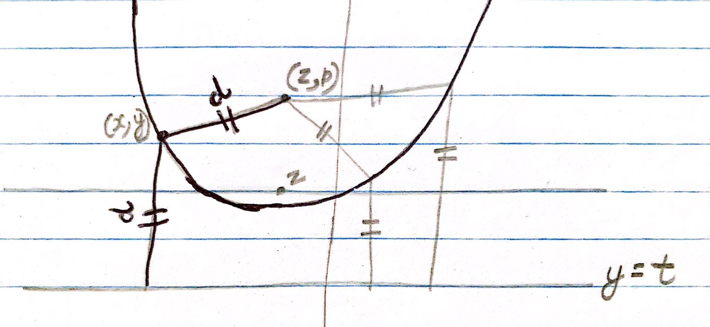
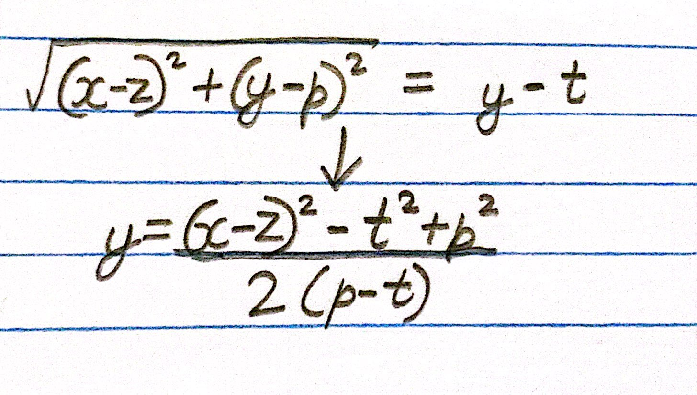
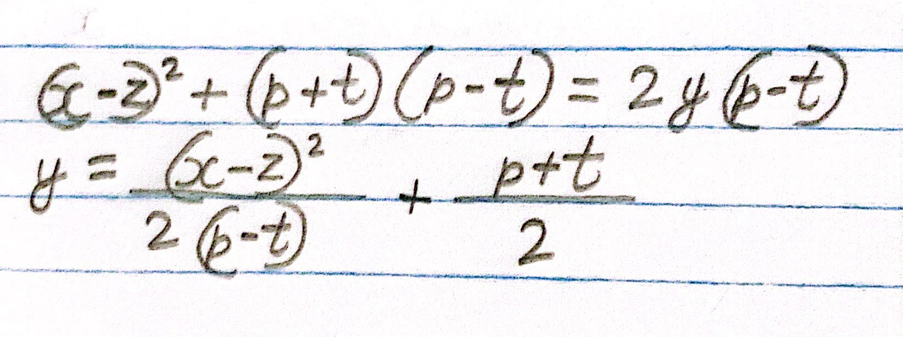
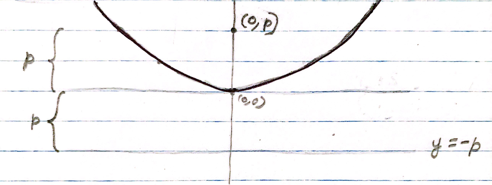
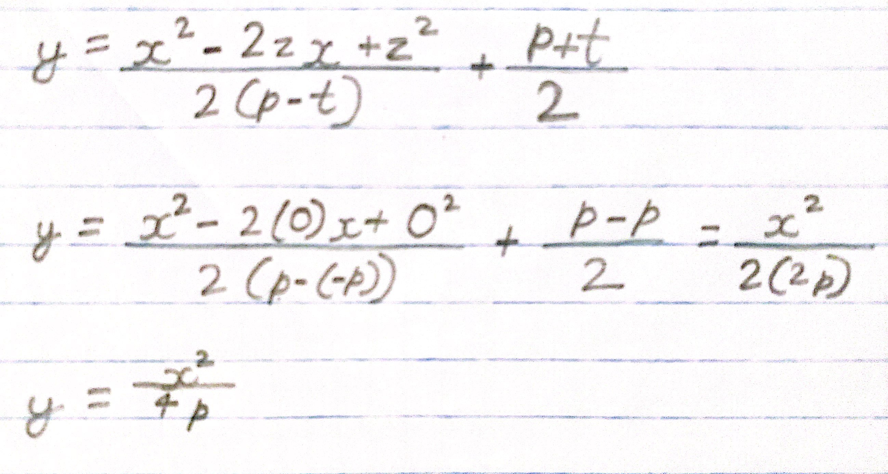

The parabola is defined as the set of all the points that are equidistant from the focus and directrix. All these points taken together form the parabola. On the example below, the focus is the point (z, p) and the directrix is the line y = t:

Let (x, y) be a point in the parabola, and let the distance d be the distance from (x, y) to the focus point or the directrix:
Using the two definition of d (the distance from the focus and the distance from the directrix), we can say:
Lets factorize -t2+p2:
If we want to write this in the form y = ax2+bx+c:

For a simpler formula, lets say that the vertex of the parabola is at the origin:
This would give:
